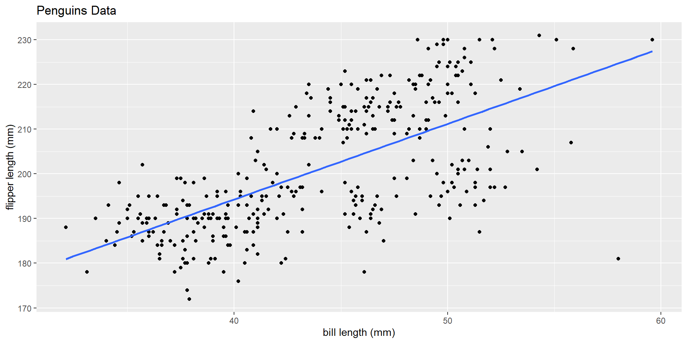
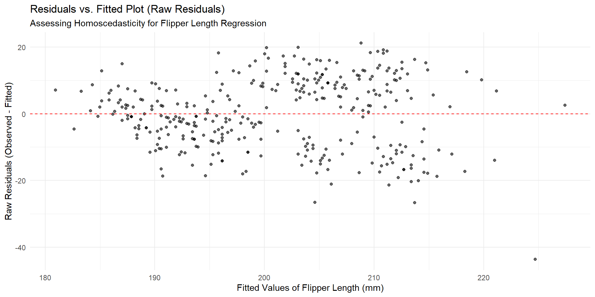
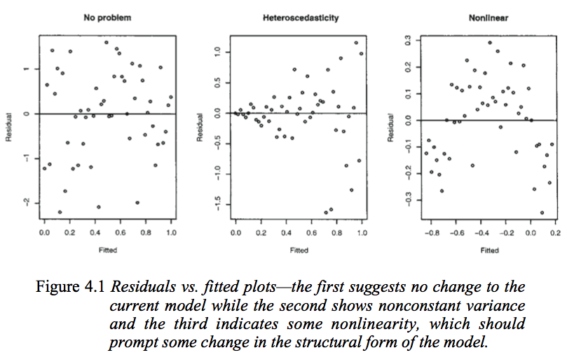
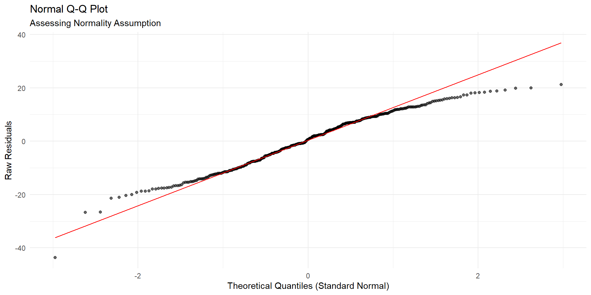
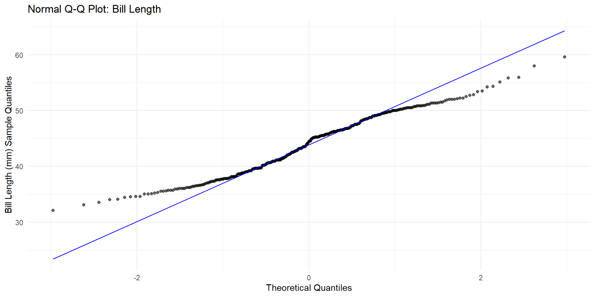
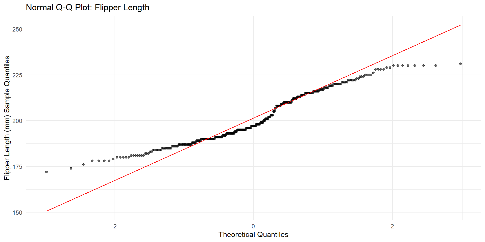

| term | estimate |
|---|---|
| (Intercept) | 126.684 |
| bill_length_mm | 1.690 |
ST312: Regression Inference (10)
2026-11-17
Checklist
– Homework-3 assigned 11-13; due 11-20
– Rubric assignment is out now; due 11-27
– Don’t forget about the Statistics Experience (12-1)
– Exam-2 grades are LIVE
> regrade window until Friday at 5pm– Final Exam
> December 3rd 3:30pm in our classroom
> Cumulative with a focus on unit-IIILast time

– What type of regression is this called?
– How was this line fit?
In-R
Write out this model.
Writing out our model
\(\hat{y} = \hat{\beta_o} + \hat{\beta_1}*x\)
\(\widehat{\text{flipper length}} = 126.68 + 1.69*\text{bill length}\)
Estimating SLR parameters (10.1)
I’m going to interchange \(b_1\) and \(\hat{\beta_1}\)
b1 = \(r\frac{s_y}{s_x}\)
# A tibble: 1 × 3
sd_bill sd_flip cor
<dbl> <dbl> <dbl>
1 5.46 14.1 0.656Hypothesis Test
I want to test if there is some relationship between bill length and flipper length.
What would my null and alternative hypotheses be?
Null and alternative
\(H_o: \beta_1\) = 0
\(H_a: \beta_1 \neq 0\)
There is no linear relationship between bill length and flipper length in the population (given everything else in the model)
There is a linear relationship between bill length and flipper length in the population (given everything else in the model)
(given everything else in the model) <- this is not important in simple linear regression, but it will be!
now what…
Assumptions
– Independence
– Linear relationship
– Equal Variance
– Normality or residuals
Linear relationship

Equal Variance (and linearity)
Fitted = Predicted

Homoscedasticity means “having the same variance”
Equal Variance (and linearity)

Normal q-q plots

How to fix this
For now, it’s beyond the scope of this course…
… but I’ll post resources for you if you are interested
Normality
The standard \(p\)-values and confidence intervals calculated for your slope and intercept coefficients (which rely on the \(t\)-distribution and the normality assumption) may be inaccurate….
But our sample size is large, making our hypothesis test more “robust” to this assumption (vs the others)
Test statistic
t
Test statistic
\[t = \frac{\hat{\beta}_1 - \beta_{\text{null}}}{\text{SE}(\hat{\beta}_1)}\]
\[\text{SE}(\hat{\beta}_1) = \sqrt{\frac{\hat{\sigma}^2}{\sum_{i=1}^{n} (X_i - \bar{X})^2}}\]
\[\hat{\sigma}^2 = \frac{\text{RSS}}{n - 2}\]
Where \(\mathbf{\bar{X}}\) is the Sample Mean of the Predictor Variable
Output
| term | estimate | std.error | statistic | p.value |
|---|---|---|---|---|
| (Intercept) | 126.684 | 4.665 | 27.156 | 0 |
| bill_length_mm | 1.690 | 0.105 | 16.034 | 0 |
And this t-statistic follows a t-distribution with n-2 degrees of freedom (-2 because we estimate the population slope and intercept)
– Recreate the statistic
– Draw out what the p-value would look like
What does all of this mean?
Confidence intervals
How do you think we should go about this?
Confidence intervals
We can calculate three types of confidence intervals:
– Confidence interval for \(\beta_1\)
– Confidence interval for the mean response
– Prediction interval for a brand new observation
Response
\(\hat{\beta}_1 \pm t^*_{n-2} \cdot SE(\hat{\beta}_1)\)
\(\hat{\mu}_y \pm t^*_{n-2} \cdot SE(\hat{\mu}_y)\)
\(\hat{y} \pm t^*_{n-2} \cdot SE(\hat{y})\)
For the slope
\(\hat{\beta}_1 \pm t^*_{n-2} \cdot SE(\hat{\beta}_1)\)
| term | estimate | std.error | statistic | p.value |
|---|---|---|---|---|
| (Intercept) | 126.684 | 4.665 | 27.156 | 0 |
| bill_length_mm | 1.690 | 0.105 | 16.034 | 0 |
Calculate a 95% confidence interval using the output above!
For the slope
\(1.690 \pm 1.96(0.105) = (1.4842,\ 1.8958)\)
Interpret this confidence interval
Does this agree with our hypothesis test?
if time: prediction vs mean
Prediction vs mean
| term | estimate | std.error | statistic | p.value |
|---|---|---|---|---|
| (Intercept) | 126.684 | 4.665 | 27.156 | 0 |
| bill_length_mm | 1.690 | 0.105 | 16.034 | 0 |
What is the estimated mean bill flipper length for when a penguin has a bill length of 40 mm?
What would you predict a new penguin’s flipper length be if they had a bill length of 40 mm?
Standard Errors
\(X_\text{given}\) = What we set x equal to
\[\text{SE}_{\hat{\mu}_{Y}|X_g} = \sqrt{\hat{\sigma}^2 \left[\frac{1}{n} + \frac{(X_\text{given} - \bar{X})^2}{\sum_{i=1}^{n} (X_i - \bar{X})^2}\right]}\]
\[\text{SE}_{\text{Prediction}} = \sqrt{\hat{\sigma}^2 + \hat{\sigma}^2 \left[ \frac{1}{n} + \frac{(X_\text{given} - \bar{X})^2}{\sum_{i=1}^{n} (X_i - \bar{X})^2} \right]}\] What’s the difference?
Standard Errors
\[\text{SE}_{\hat{\mu}_{Y}|X_g} = \sqrt{\hat{\sigma}^2 \left[\frac{1}{n} + \frac{(X_\text{given} - \bar{X})^2}{\sum_{i=1}^{n} (X_i - \bar{X})^2}\right]}\]
This accounts for the uncertainty of our fitted line
Standard Errors
\[\text{SE}_{\text{Prediction}} = \sqrt{\hat{\sigma}^2 + \hat{\sigma}^2 \left[ \frac{1}{n} + \frac{(X_\text{given} - \bar{X})^2}{\sum_{i=1}^{n} (X_i - \bar{X})^2} \right]}\]
This accounts for the uncertainty of our fitted line AND variability of individual data points around the true population regression line
Output
95% confidence interval
fit lwr upr
1 194.2869 192.8945 195.6793Output
95% prediction interval
fit lwr upr
1 194.2869 173.3384 215.2354Note:
You will not be asked to calculate confidence intervals for mean response/prediction, but you may be asked:
– to interpret these
– know the relationship between
Questions
Review
What happens to these intervals when…
– n goes up?
– Confidence level goes down?
We won’t get here
Correlation
We can also do a hypothesis test for correlation
\(\rho\) = population correlation
r = sample correlation
What would our null and alternative hypothesis be?
Null and alternative
\(H_o: \rho = 0\)
\(H_a: \rho \neq 0\)
Statsitic
# A tibble: 1 × 1
cor
<dbl>
1 0.656Assumptions
– Independence
– Normality
– Linearity
Normality


Test Statistic
\(t = \frac{r\sqrt{n-2}}{\sqrt{1 - r^2}}\)
\[t = \frac{0.65626 \sqrt{342 - 2}}{\sqrt{1 - 0.65626^2}} = 16.034\]
The connection
\(\frac{b1}{SE_\text{b1}} = \frac{r\sqrt{n-2}}{\sqrt{1 - r^2}}\)
The statistic is the same! It comes down to your research question.